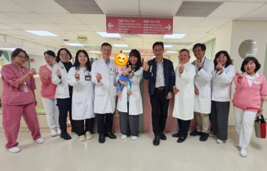

14
童羽之家・返家有翼
Wings for Children Empowerment & Residential Care Center
特殊需求的孩子，更需要一個不離不棄的醫療團隊。我們把照護從醫院延伸到家裡。

36
14
童羽之家 兒童住宿型長照機構
7F ・ 29 床 ・ 復能孩子，也賦能家庭
Wings for Children Empowerment & Residential Care Center
當孩子因重症、罕病、早產併發症或嚴重發展遲緩，需要比居家更密集、比急性病房更生活化的支持，童羽之家承接的正是這段最艱難的銜接期──讓孩子在穩定照護中復能，也讓家庭重新學會照顧、準備返家。
A short-stay home that empowers children to recover and families to bring them home with confidence.
以賦能為核心
復能孩子的身體與功能，也賦能家庭的照護能力
以返家為目標
短期入住的最終目的，是讓孩子可以平安回家
以短期入住為規劃
不是永久安置，而是過渡期的密集支持與訓練
與國際標竿同行
International Exchange · Local Practice
兒童重症與長期照護是亞洲共同面對的課題。婦幼院區一邊參照日本制度與在宅醫療經驗，一邊把童羽之家的本土實踐，帶入國際對話。
制度參照
日本 2021 年《醫療的照護兒及其家庭支援法》之跨域協作模式
專家來訪
2025 年 12 月日本兒童在宅醫療團隊實地交流童羽之家
國際發表
童羽之家試營運經驗於國際研討會分享，進入亞洲對話
特別感謝 方秉仁先生 善心捐助本空間之兒童友善美化裝修
37
守護兒童健康的五個層次
Five Layers of Child Health Protection
兒童健康的照護，不該是「生病了才看醫生」的單點行動，而是涵蓋預防、篩檢、急性處理到長期復健的完整體系。婦幼院區依循公共衛生原則，讓每項服務都定位在合適的預防層次。
第一級
促進健康
社區衛教・預防保健・學童健檢・母乳庫・親子共讀
第二級
特殊保護
兒童肥胖管理・家庭責任醫師・嬰兒哭泣親職支持
第三級
早期診斷・治療
新生兒篩檢・基因醫學中心・學童心臟檢查・一站式幼兒整合保健
第四級
限制殘障
兒科門急・住院・重症・早產兒及重症照護
第五級
復健
早療・復健・家訪・童羽之家兒童長照
Child health is not a single appointment but a layered system — prevention, protection, screening, treatment, rehabilitation.
38